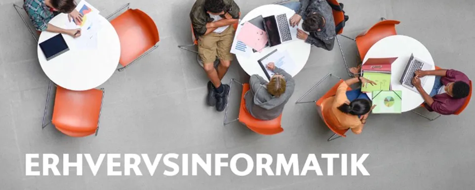
Abdul og Omar · Klik på et kapitel for at læse videre
Gorilla Juice er en virksomhed der sælger friskpressede juices og smoothies lavet på friske råvarer. Budskabet er energi, smag og kvalitet i ét.
Vi har lavet en reklameplakat der skal tiltrække kunder og kommunikere virksomhedens budskab. Vi valgte at bruge en gorilla som maskot, stærke farver og billeder af produkterne for at fange opmærksomheden.
Sloganet lyder: "Friskpressede juices og smoothies lavet på friske råvarer. Kom forbi og få energi, smag og kvalitet i ét." – og vi slutter af med: "Vi glæder os til at se jer!"
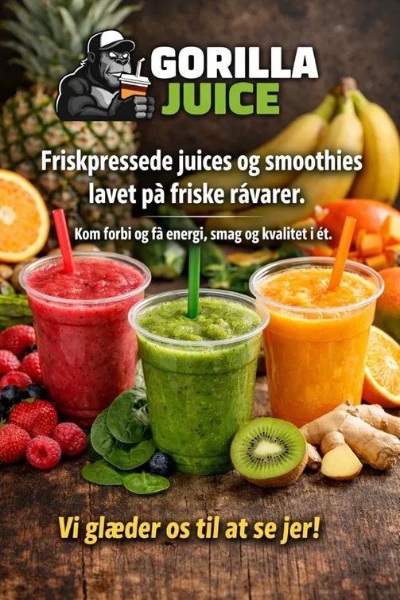
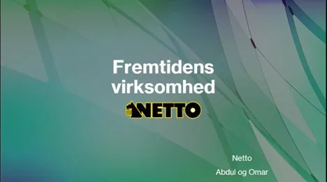
Vores analyse af Netto som fremtidens virksomhed er opbygget i tre dele:
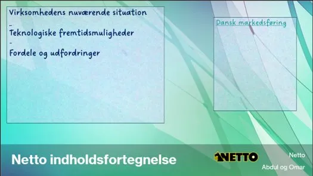
Vi har valgt Netto fordi det er en af Danmarks mest kendte supermarkedskæder. Netto tilbyder kunderne billige dagligvarer i god kvalitet. Målgruppen er bred – familier, unge og ældre danskere på tværs af hele landet.
Vi undersøgte hvor mange danskere der besøger Netto. Statistikken viser at rigtig mange besøger Netto på et år, og en stor del besøger dem ugentligt – det viser at Netto har en meget stærk position på det danske marked.
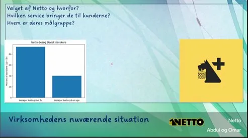
Der er fem Netto-lokationer i Esbjerg. Vi har kortlagt dem alle på et kort for at vise virksomhedens tilstedeværelse i lokalområdet.
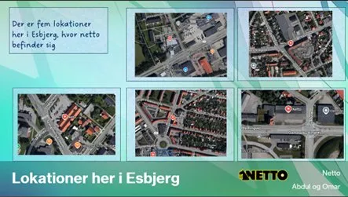
Hvordan kan Netto bruge teknologi i fremtiden? Vi har set på muligheden for at bruge robotter i butikkerne. Robotter kan hjælpe kunder, fylde hylder op og gøre indkøbsoplevelsen hurtigere og mere effektiv.
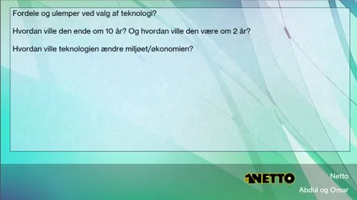
Vi har analyseret teknologien ud fra disse spørgsmål:
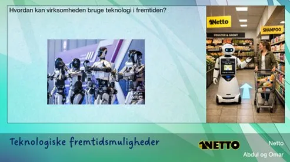
Vi har gennemgået 28 centrale it-sikkerhedsbegreber og forklaret dem med egne ord samt givet et konkret eksempel på hvert begreb. Vi dækker alt fra hardware og software til malware, cookies, kryptering og GDPR.
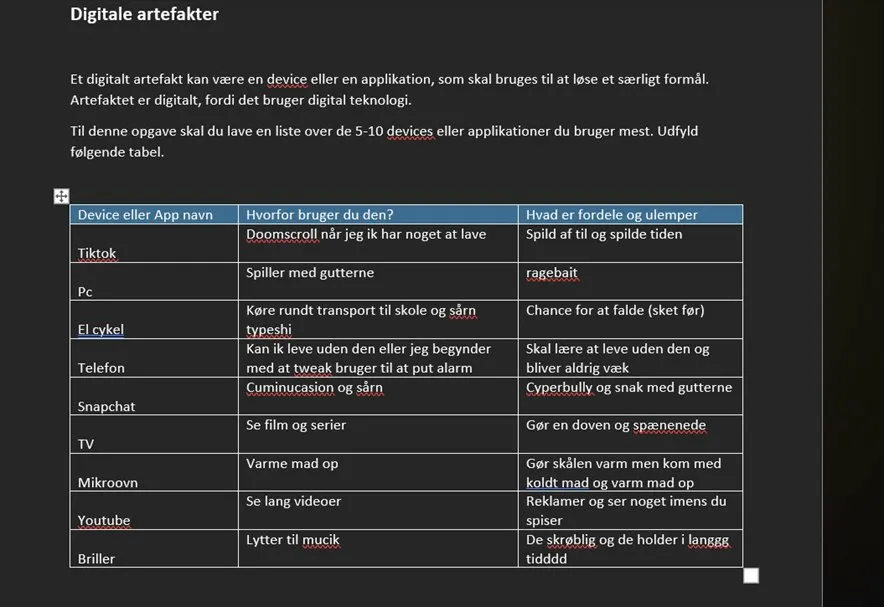
| # | Begreb | Forklaring med egne ord | Eksempel |
|---|---|---|---|
| 1 | Hardware | Fysiske dele af en computer | Skærm, tastatur |
| 2 | Software | Programmer på en computer | Word, Excel |
| 3 | Malware | Skadelig software der kan ødelægge computer | Virus |
| 4 | Virus | Smittende program der ødelægger filer | Inficeret download |
| 5 | Trojansk hest | Farligt program forklædt som normalt | Fake spil |
| 6 | Orm | Spreder sig selv via netværk | Sender sig selv videre |
| 7 | Keylogger | Optager hvad du skriver | Stjæler kodeord |
| 8 | Spyware | Overvåger din computer | Ser hvad du laver |
| 9 | Adware | Viser reklamer automatisk | Pop-up reklamer |
| 10 | Phishing | Falske mails der stjæler info | Fake bankmail |
| 11 | Spammails | Uønskede reklamemails | Reklamer i mail |
| 12 | Hjælpe-cookies | Husker dine valg på siden | Sprogvalg |
| 13 | Sessions-cookies | Virker mens du er på siden | Login |
| 14 | Tracking-cookies | Følger din adfærd online | Reklamer |
| 15 | Tredjeparts-cookies | Cookies fra andre firmaer | Google/Facebook |
| 16 | Kildekritik | Tjekke om info er troværdig | Er siden ægte? |
| 17 | Biometrisk data | Data om din krop | Fingeraftryk |
| 18 | Logisk sikkerhed | Digital beskyttelse | Kodeord |
| 19 | Fysisk sikkerhed | Beskytter udstyr | Låst dør |
| 20 | RAID | Flere harddiske som sikkerhed | Backup system |
| 21 | Firewall | Beskytter mod hackere | Blokerer trafik |
| 22 | Antivirusprogram | Finder virus | Windows Defender |
| 23 | VPN-forbindelse | Skjuler din IP | Sikker wifi |
| 24 | Kryptering | Gør data hemmeligt | Netbank |
| 25 | Backup | Ekstra kopi af data | Cloud |
| 26 | Persondata | Oplysninger om en person | Navn, adresse |
| 27 | Persondataforordning (GDPR) | Regler for dine persondata | Må ikke dele info |
| 28 | Ophavsretsloven (Copyright) | Regler for ejerskab | Må ikke kopiere billeder |
Et digitalt artefakt er en device eller en applikation, som skal bruges til at løse et særligt formål. Artefaktet er digitalt, fordi det bruger digital teknologi.
Til denne opgave har vi lavet en liste over de devices og apps vi bruger mest i hverdagen – og beskrevet hvorfor vi bruger dem og hvad fordele og ulemper er.
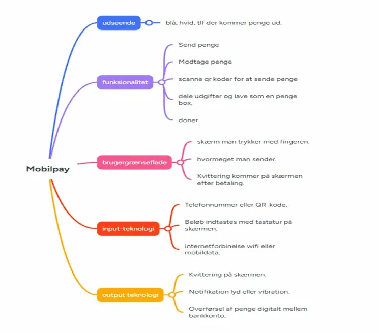
| Device eller App | Hvorfor bruger du den? | Fordele og ulemper |
|---|---|---|
| TikTok | Doomscroll når jeg ikke har noget at lave | Spild af tid og spilde tiden |
| PC | Spiller med gutterne | Ragebait |
| El-cykel | Transport til skole og sårn typeshi | Chance for at falde (sket før) |
| Telefon | Kan ikke leve uden den – bruger til alarm mm. | Skal lære at leve uden den og bliver aldrig væk |
| Snapchat | Kommunucasion og sårn | Cyberbully og snak med gutterne |
| TV | Se film og serier | Gør en doven og spænenede |
| Mikroovn | Varme mad op | Gør skålen varm men maden kold |
| YouTube | Se lange videoer | Reklamer og ser noget imens du spiser |
| Briller | Lytter til musik | De skrøblige og holder ikke i lang tid |
Vi har analyseret MobilePay som et digitalt system ved hjælp af et mindmap. Mindmappet viser systemets opbygning fordelt på udseende, funktionalitet, brugergrænseflade, input-teknologi og output-teknologi.
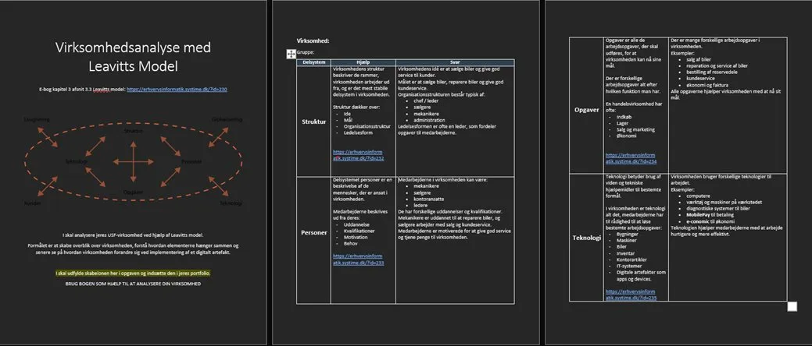
MobilePay er blå og hvid – det er en app på telefonen hvorfra man kan sende og modtage penge.
Vi bruger Leavitts Model til at analysere Netto. Formålet er at skabe overblik over virksomheden og forstå hvordan de fire elementer hænger sammen – og hvordan virksomheden kan forandre sig ved implementering af et digitalt artefakt.
Modellen ser på fire delsystemer:
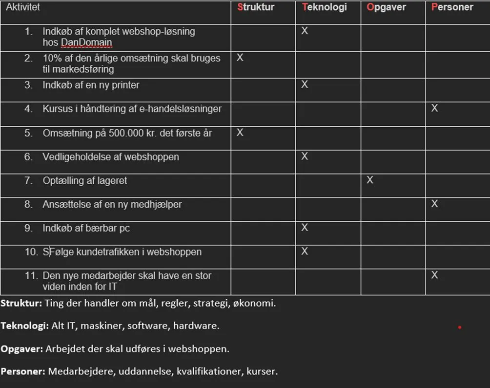
Her er alle aktiviteter kategoriseret i Leavitts fire delsystemer:
| Aktivitet | Struktur | Teknologi | Opgaver | Personer |
|---|---|---|---|---|
| 1. Indkøb af komplet webshop-løsning hos DanDomain | X | |||
| 2. 10% af den årlige omsætning skal bruges til markedsføring | X | |||
| 3. Indkøb af en ny printer | X | |||
| 4. Kursus i håndtering af e-handelsløsninger | X | |||
| 5. Omsætning på 500.000 kr. det første år | X | |||
| 6. Vedligeholdelse af webshoppen | X | |||
| 7. Optælling af lageret | X | |||
| 8. Ansættelse af en ny medhjælper | X | |||
| 9. Indkøb af bærbar pc | X | |||
| 10. Følge kundetrafikken i webshoppen | X | |||
| 11. Den nye medarbejder skal have stor viden inden for IT | X |
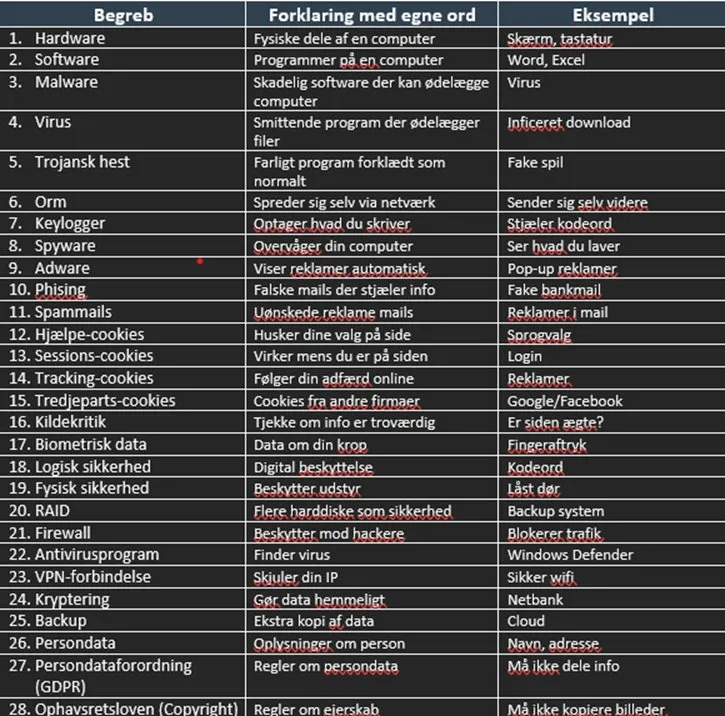